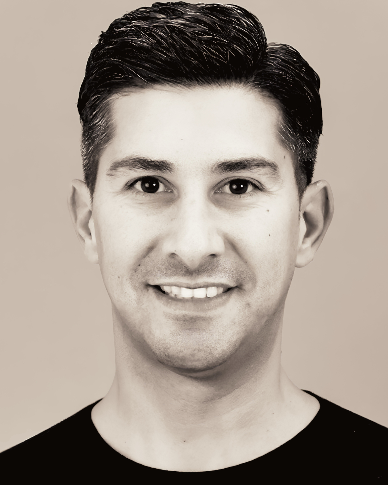

Founder
KAVAK BRAND STUDIO · Düsseldorf

Mit über 20 Jahren Erfahrung auf Handels- und Industrieseite verbinde ich fundierte Marktkenntnis mit einem gewachsenen Netzwerk und einem Gespür für Marken, Sortimente und Vertriebspotenziale.
Mein Weg führte mich vom Verkauf auf der Fläche über Führungs- und Einkaufsverantwortung bis zur Arbeit für internationale Modemarken. So kenne ich die Anforderungen des Handels ebenso wie die strategischen Ziele der Brands.
Ich bringe ausgewählte internationale Fashion Brands mit den Partnern zusammen, die zu ihnen passen: vom Premium-Fachhandel über Key Accounts bis zu Department Stores.
Ehrlichkeit, Fleiß, Qualität und Verlässlichkeit prägen meine Arbeit. Ich bleibe neugierig, reagiere schnell und flexibel und packe vor Ort selbst mit an.
Mich treibt die gemeinsame Herausforderung an, Dinge besser zu machen und Chancen zu nutzen, die sich im direkten Austausch ergeben.
02 / MY JOURNEY
KAVAK BRAND STUDIO · Düsseldorf
Zuitable · Düsseldorf
OLYMP Bezner KG · Düsseldorf
LERROS Moden GmbH · Düsseldorf
PME Legend GmbH · Düsseldorf
Mensing